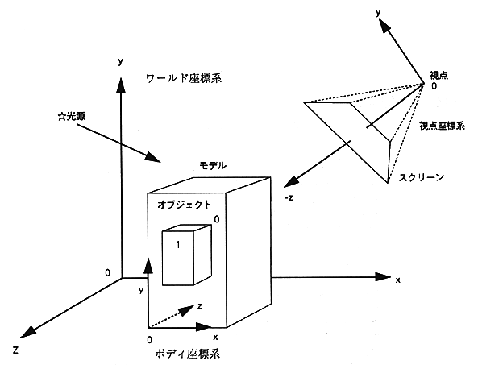

Return to previous page ｜ Return to menu ｜ Go to next page
-
3. VDP13D Guide
-
3.1 Purpose
- The purpose is to display 3D sprites using the VDP1 extended processing library.
The features are shown below.
- Handles models that are hierarchically connected objects that are a collection of polygons.
- Matrix operations associated with moving models and objects within the model
There is no need to be conscious.
- The coordinate value of the point after conversion to the world coordinate system is passed through the user callback routine
Notify the user application.
- Texture mapping for polygon display and various color modes of sprites
It can be applied.
- Can be displayed together with 2D sprites.
-
3.2 3D coordinate system and display model
-
[Coordinate system]

- The distance from the viewpoint to the screen is fixed at 1.0.
Return to previous page ｜ Return to menu ｜ Go to next page